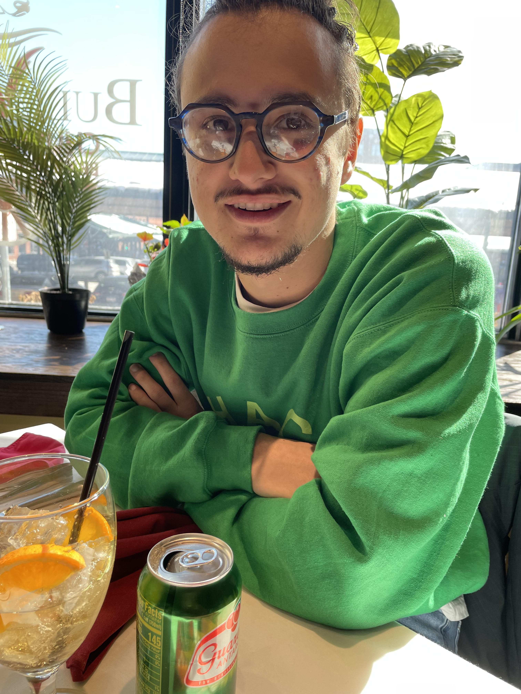

ABOUT ME
My name is Bernardo and I'm a third year graduate student at the University of Michigan in the Applied and Interdisciplinary Mathematics program. I'm originally from Curitiba, Brazil and I enjoy reading books and comics, playing tennis and playing different instruments. I'm also interested in developing video games, writing stories and learning about music composition. When it comes to math, I'm researching mathematical models of cancer. I'm currently working on applying machine learning and statistical methods to relate differential equation and agent-based models of breast cancer.

VIDEO GAME PROJECTS
- PARALLELIZED RAY TRACER
This project implements Peter Shirley's Ray Tracing in One Weekend in C++, but it differs from the book's implementation in that the tracer was parallelized using CUDA. The parallelized code achieved a performance improvement of 12 times compared to the original code! - HUNGRY CAT COOKING
Hungry Cat Cooking is a cooking platforming game where you will play as a cat that aspires to be the first feline to open a human restaurant! Of course, in the world we live in, a cat can't just randomly open a restaurant and serve humans. A long time ago, a fellow feline tried to accomplish such feat and wasn't successful. To your luck, this old cat created a training that will prepare you to thrive where he has failed. Check out the game trailer below!
Developed by: Bernardo Bianco Prado, Calvin Tran, Colin Yoon, and Drew Vanderspool
Original scores by: Emily Sulkey and Liam Kochanek
Original art by: Liam Kochanek, Calvin Tran and Bernardo Bianco Prado
Voice acting by: Chandler Branson - PIXEL BLUE
This is a two week prototype of a rythmic puzzle game in homage of Blues music. Your one and only tool is an electric keyboard and you can use it to progress in the game, interact with the world around you or just enjoy your own Blues improvisation!